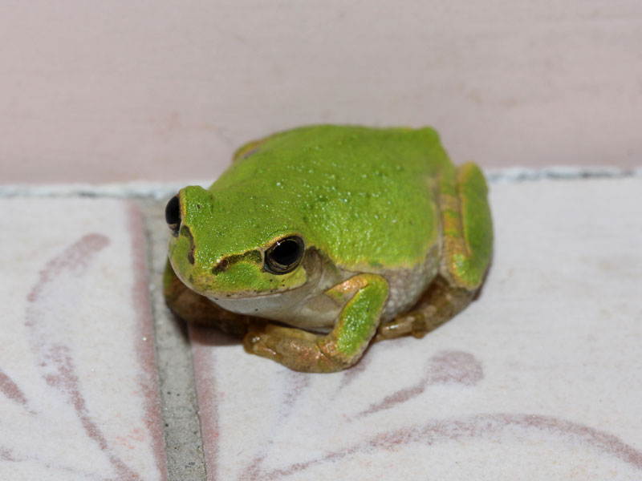
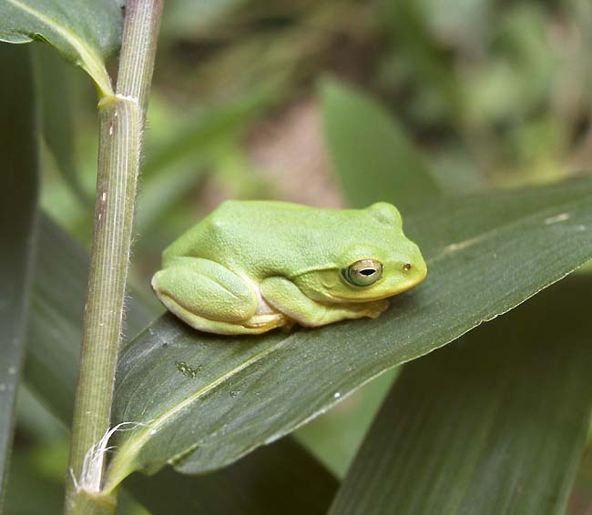
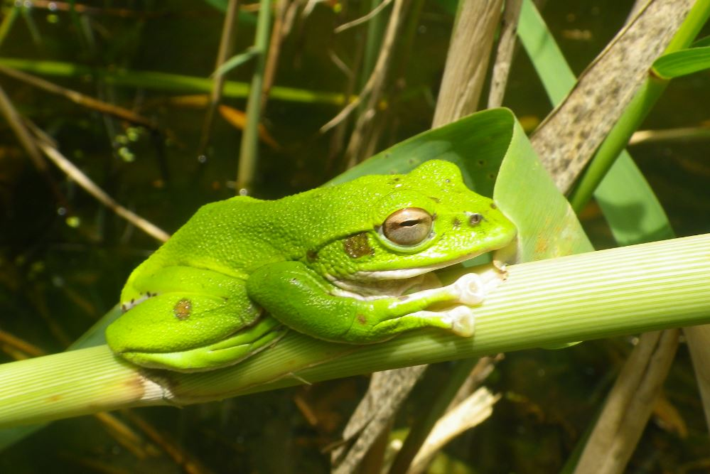
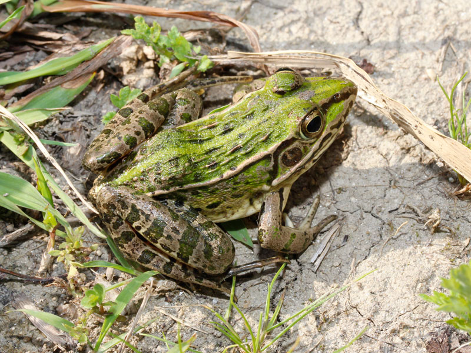
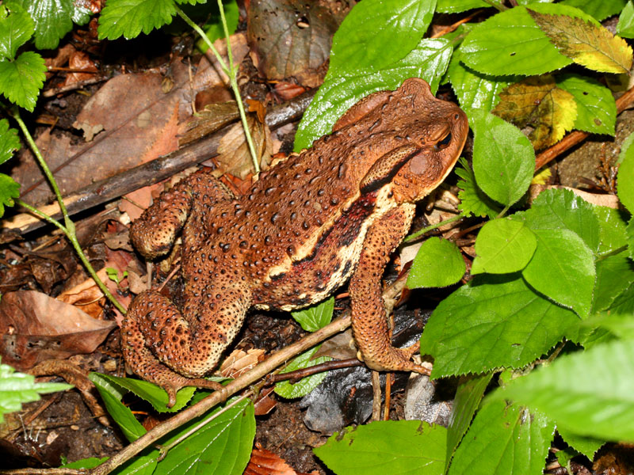
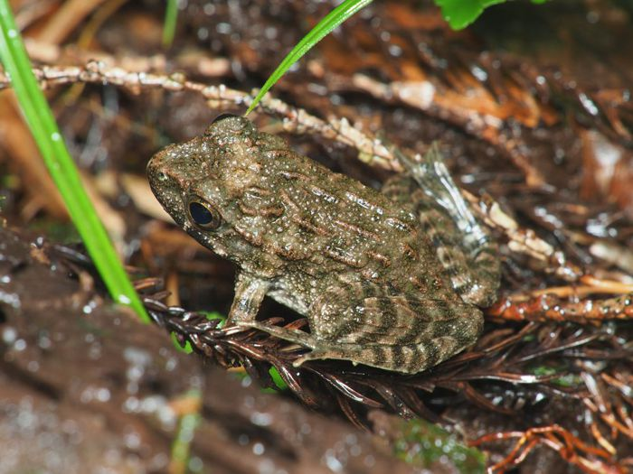
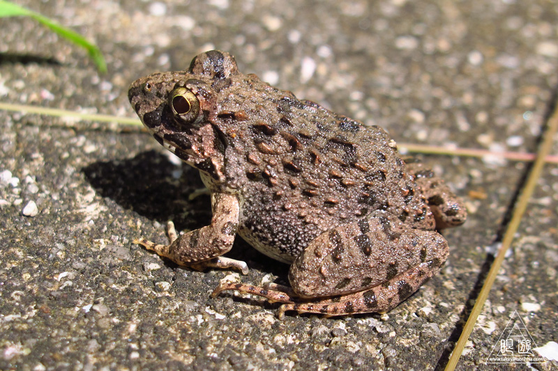
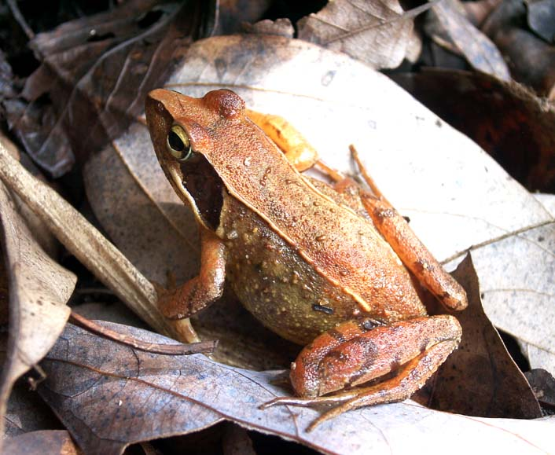
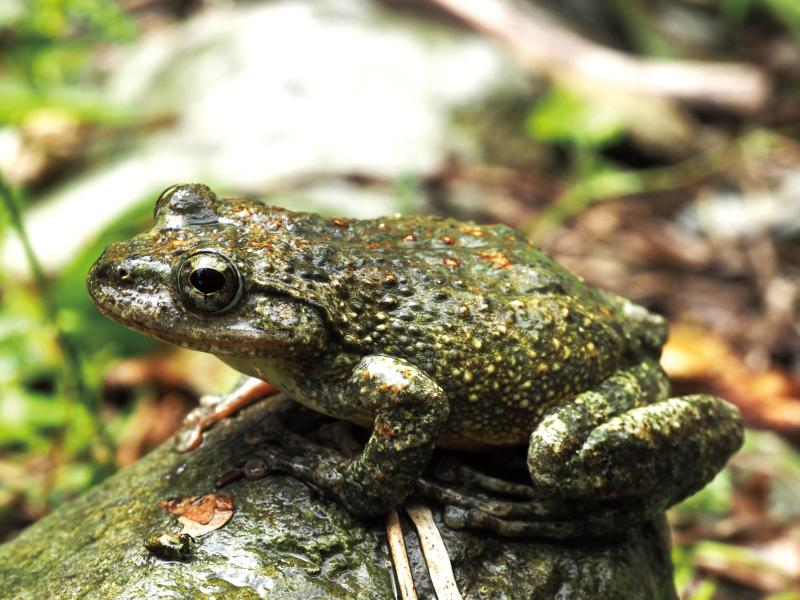
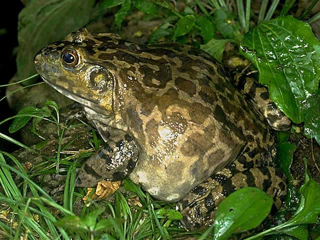

「カエル」という生き物の生態について
カエル（無尾目）は、完全水棲の幼生（オタマジャクシ）から半陸棲・陸棲の成体へと劇的な「変態」を遂げる両生類の代表的グループです。水辺と陸上を結ぶ重要な生態系の一員であり、独特の生理構造を持っています。
皮膚呼吸と水分吸収
カエルの皮膚は極めて薄く粘液で常に湿っています。肺呼吸だけでなく、この水分を介して直接ガス交換（皮膚呼吸）を行います。また、口から水を飲むことはほとんどなく、腹部の皮膚から水環境を取り込みます。脱皮した古皮は栄養として自ら食べます。
独特な捕食行動と視覚
成体は完全な肉食性（昆虫や小動物）です。口の前側に着いた粘着性のある舌を素早く反転伸ばして獲物を捕らえます。獲物を飲み込む際は、巨大な眼球を頭の中に引き込み、口の天井を押し下げることで喉奥へ送り込むという特有の補助動作を行います。
繁殖形態と求愛発声
オスは「鳴嚢（めいのう）」という膨らむ袋で空気を共鳴させ、大音量の鳴き声を発します。これは縄張り主張やメスへのアピール（抱接）に用いられます。繁殖様式は多岐にわたる、泡状の巣を作る種、地上に集団産卵する種、紐状の卵を産む種などが存在します。
越冬と高い耐寒性
変温動物であるため、気温が下がる冬期は水底の泥中や地中深くで冬眠します。体液中にグリコーゲンやグリセロールなどの耐寒成分を蓄積することで、体組織の凍結を防ぐすぐれた生理適応能力を備えています。
国内に分布する主要なカエル図鑑（生息地・写真・鳴き声・生態）
日本国内で観察される主要なカエルの各種データ、生息地域、観察ポイントおよび鳴き声音声アーカイブです。
ニホンアマガエル
Dryophytes japonicus
画像準備中';">| 生息地 | 日本全国（本州・四国・九州・北海道および周辺離島）、国後島、朝鮮半島、中国東部。平地から低山地の水田、農耕地、庭園、樹林地に広く生息。 |
|---|---|
| 外見特徴 | 鼻先から目を通って体側へ伸びる鮮やかな黒い帯（アイマスク状の過眼線）と指先の吸盤が目印。背景や湿度で体色を変える。 |
| 鳴き声 | 「クワクワクワ…」「クッッケッケッ」。雨の前や夜間に大合唱を行う（雨鳴き）。 |
| 生態メモ | 指先に円形の吸盤を持ち、草木の葉上やガラス面などの垂直な壁面も容易に登ることができます。体色を緑色・灰色・褐色へと環境に合わせて変色させる能力に優れます。なお、皮膚の粘液には「カリポトキシン」という強い局所刺激毒が含まれており、触れた手で目をこすると激しい痛みを引き起こしたり、傷口に入ると危険なため観察後の手洗いは必須です。気圧や湿度の変化を感じ取って昼間でも鳴き交わす「雨鳴き（レインコール）」の習性が有名です。 |
シュレーゲルアオガエル
Zhangixalus schlegelii
画像準備中';">| 生息地 | 日本固有種（本州、四国、九州、対島、五島列島など）。平地から山地にかけての水田、森林、竹林、湿地に生息。 |
|---|---|
| 外見特徴 | 全体が鮮やかな気品ある緑色。アマガエルと異なり「目の横の黒い帯」が無い。虹彩は黄色〜赤褐色。 |
| 鳴き声 | 「タタタタ…」「キキキキ…」と高く澄んだ透き通った連続音。 |
| 生態メモ | 見た目はモリアオガエルやアマガエルに似ていますが、過眼線（目横の黒帯）がなく、虹彩が黄色いことで区別されます。学名はオランダの自然史博物館館長シュレーゲルに由来します。繁殖期（4〜6月）になると水田のあぜ道や池の周囲の湿った土の中に穴を掘り、メスが分泌液を泡立てた白い泡状卵塊を産み付けます。土中や草陰に隠れて鳴くため「声はすれども姿は見えず」の代表格です。 |
モリアオガエル
Zhangixalus arboreus
画像準備中';">| 生息地 | 日本固有種（本州、佐渡島）。山地〜亜高山帯の森林、樹木に囲まれた池沼・水たまり周辺に生息。 |
|---|---|
| 外見特徴 | 緑色の体に褐色の斑点模様が混ざり（個人差あり）、シュレーゲルより大型。虹彩が赤褐色〜赤色。 |
| 鳴き声 | 「カラララ…」「コロコロ…」と木の上から水面に響かせる優しい声。 |
| 生態メモ | 非繁殖期は標高の高い森林の樹上に生息し、地上に降りてくることは滅多にありません。5月〜7月の繁殖期になると、水面上に覆いかぶさる樹木の枝や葉に集まり、複数のオスとメスが絡み合って泡で包まれた卵塊（泡状卵塊）を作り出します。孵化したオタマジャクシは、雨で崩れた泡とともに真下の水面へ落下して生長します。一部の生息地（岩手県平泉町の毛越寺や福島県など）の繁殖地は国の天然記念物に指定されています。 |
トノサマガエル
Pelophylax nigromaculatus
画像準備中';">| 生息地 | 日本（本州の中部以西、四国、九州の平野部）。水田、湿原、河川敷、池沼などの開放的な水辺環境。 |
|---|---|
| 外見特徴 | 背中の中心にまっすぐ伸びる一本の黄色〜黄緑の背筋線と、黒い斑点模様。俊敏で長い後ろ足を持つ。 |
| 鳴き声 | 「グググッ、ゲゲゲッ」「クッカッカッ」と笑い声のような断続的なアクセントのある声。 |
| 生態メモ | 強靭な後脚を持ち、跳躍力と水中の遊泳力に極めて長けています。警戒心が強く、人が近づくと「ジャンプして水中に潜り泥を巻き上げて隠れる」行動をとります。繁殖期のオスは全体的に鮮やかな黄緑色〜黄白色を帯びる「婚姻色」を発現させます。近接種であるナゴヤダルマガエルやトウキョウダルマガエルと形態が酷似しており、地域によっては交雑も認められます。近年の水田整備（コンクリート護岸化）等により生息地が減少しつつあります。 |
ニホンヒキガエル
Bufo japonicus japonicus
画像準備中';">| 生息地 | 日本固有亜種（近畿地方以西の本州、四国、九州）。平地から山地の森林、竹林、公園、民家の庭先。 |
|---|---|
| 外見特徴 | 大型でドッシリとした体格。全身がイボに包まれ、目の後ろに大きな耳下腺（毒腺）を持つ。 |
| 鳴き声 | 「クックックッ」「キャッキャッ」と小さくひかえめなリリース・コール（嫌がり声）。 |
| 生態メモ | 普段は水辺から離れた陸上の薄暗い場所や地面の隙間に生息し、夜間にのそのそと歩いて昆虫やミミズを探します。跳躍力は低く、危険を感じると体を大きく膨らませて威嚇します。目の後ろにある「耳下腺」や皮膚のイボから「ブフォトキシン」という神経毒を含む白く不快な毒液を分泌し、天敵のヘビや哺乳類から身を守ります。早春（2月〜4月）のわずか数日間、普段隠れている成体が池沼や水たまりに一斉に押し寄せ、激しい求愛「蛙合戦（カエルガッセン）」を行って長大なひも状卵塊を産み落とします。 |
ツチガエル
Glandirana rugosa
画像準備中';">| 生息地 | 日本（本州、四国、九州、佐渡島など）。水田、湿地、流れの緩やかな小川、池沼の周辺。 |
|---|---|
| 外見特徴 | 全身がサメ肌のように大小の突起イボで覆われた茶褐色の体。お腹側にも灰色〜黒の斑紋がある。 |
| 鳴き声 | 「ギギギ…」「グゥグゥ…」と低く摩擦音のような声。 |
| 生態メモ | 別名「イボガエル」とも呼ばれ、皮膚全体にサメ肌状の多数の小さな突起が存在するのが特徴です。刺激を受けると独特の不快臭（油臭）を放ちます。類似するヌマガエルとの区別は「腹部が真っ白か、斑紋で黒ずんでいるか」で判別できます。最大の特徴として、日本のカエルで唯一「オタマジャクシの状態で水中で冬を越し、翌年春に変態する（越冬幼生）」個体群が一定割合で存在することが挙げられます。 |
ヌマガエル
Fejervarya kawamurai
画像準備中';">| 生息地 | 西日本（東海地方以西の本州、四国、九州、南西諸島）。近年は東日本・関東地方へも外来定着。水田や池沼。 |
|---|---|
| 外見特徴 | ツチガエルに酷似するが、突起イボがやや斜め条線状。最大の識別点は「お腹側が真っ白」なこと。 |
| 鳴き声 | 「キュッキュッ…」「クックックッ…」と高い声で連続して鳴く。 |
| 生態メモ | ツチガエルによく似ていますが、体表の突起がやや縦筋状に並ぶ傾向があり、何よりお腹側が完全な乳白色（無斑）である点で見分けられます。非常に高温に強く、夏の強烈な直射日光で温水と化化した水田でも活発に活動・捕食を行います。近年、国内外の物資輸送に紛れて関東地方や東日本へと生息域を北上・拡大させており、在来生態系への影響が注視されています。 |
ニホンアカガエル
Rana japonica
画像準備中';">| 生息地 | 日本固有種（本州、四国、九州の平野部〜谷津田、山麓の草地・森林）。 |
|---|---|
| 外見特徴 | 全体が赤褐色〜橙色。鼓膜周辺にくっきりとした黒い三角の過眼線模様があり、背の折れ線（背側線）がまっすぐ。 |
| 鳴き声 | 「クッキョ、クッキョ」「キャッキャッ」と水中や水辺で鳴く。 |
| 生態メモ | スマートな体型と長い脚を持つ赤褐色のカエルです。背中両側の線（背側線）が鼓膜の後ろで曲がらず、まっすぐ平行に走る点が近縁のヤマアカガエルとの識別ポイントです。非常に早起きなカエルで、まだ雪や氷が残る1月〜3月の冬の終わりから早春にかけて水田や浅い湿地に一番乗りで集まり、球状の寒天質卵塊を産みます。そのため「春を告げるカエル」と呼ばれます。無農薬水田や谷津田の激減に伴い各地で絶滅危惧種に指定されています。 |
カジカガエル
Buergeria buergeri
画像準備中';">| 生息地 | 日本固有種（本州、四国、九州、屋久島など）。山地の清流、渓流、河川の上流〜中流域の岩場。 |
|---|---|
| 外見特徴 | ゴツゴツした河川の岩肌そっくりの扁平な体色。指先に丸く平らな吸盤を持ち急流に耐える。 |
| 鳴き声 | 「フィフィフィフィ…」「ピピピピピ…」と鳥のように美しく響く高音。 |
| 生態メモ | 日本一美しく鳴く両生類として知られ、その声は野鳥の小参（鹿）になぞらえて「河鹿（カジカ）」の名が冠されました。岩場に溶け込む体色と扁平な体つきを持ち、激しい川の流れに耐えるため指先には吸盤が発達しています。河川の大きな岩の上に縄張りを作り、清らかな美声で鳴き合います。江戸時代には「河鹿籠（かじかかご）」と呼ばれる専用の竹籠に入れてその美声を楽しむ河鹿飼育の文化が存在しました。河川改修や水質汚濁に弱いため環境指標種とされます。 |
ウシガエル
Lithobates catesbeianus
画像準備中';">| 生息地 | 北アメリカ原産（日本全国の池沼、河川敷、ダム湖、水田の用水路に外来種として広く定着）。 |
|---|---|
| 外見特徴 | 日本最大級の超大型カエル（成体15cm以上）。目のすぐ後ろに目より巨大な丸い鼓膜を持つ。 |
| 鳴き声 | 「モー、モー」「ボォー、ボォー」と牛の鳴き声のような太く重い低音。 |
| 生態メモ | 大正時代に食用目的（食用ガエル）でアメリカから輸入され、その後野外へ逃げ出して全国へ定着しました。成体は体長20cm近くに達し、口に入る大きさであれば昆虫だけでなく、小型の魚類、蛇、ネズミ、小鳥、他の両生類までも貪欲に飲み込んで捕食します。強い警戒心を持ち、接近すると水中に飛び込んで潜伏します。在来生態系へ重大な悪影響を与えるため「特定外来生物」に指定されており、生きたままの移動、飼育、野外への放出が法律で厳重に禁止されています。 |